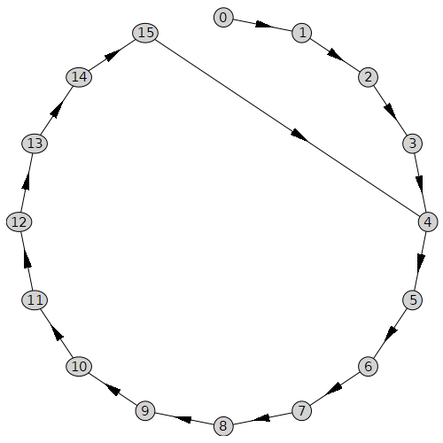
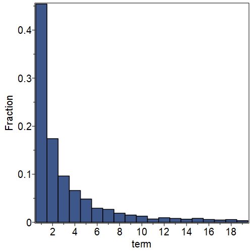

Continued Fractions
Contents
Continued Fractions¶
This Open Educational Resource (OER) or book is about using a computer to explore mathematical concepts and to generate questions. However, we’re going to start with hand computation and go slow for a while, first. Humour us, for a bit, and think of it as brushing up on arithmetic with fractions.
In the next unit, “Rootfinding, Newton’s Method, and Dynamical Systems”, the following mysterious sequence will arise naturally; here, we just throw it down.
We could suggest that you try to guess what the rule is for generating these numbers (“guessing the next term” is a common kind of puzzle, see e.g. https://www.mathsisfun.com/algebra/sequences-finding-rule.html), but unless you’ve seen it before, this example is actually pretty difficult (out of the blue like this, and unmotivated). Soon, we will show a powerful tool (the Online Encyclopedia of Integer Sequences OEIS) which makes this sequence, and many others, accessible. But without either experience or a powerful tool, this sequence is (in our opinion) too difficult to guess just now, because the rule is nonlinear.
Since we have mentioned it, go to the OEIS at the link above, and enter the subsequence of numerators \(1\), \(3\), \(17\), \(577\). The program at the server will then suggest that the sequence is A001601, which indeed it is; look at the next number at that link, which is 665857, the next term above. One of the rules given at that link (there are several) is indeed how we generated these numbers. The OEIS is a very powerful kind of index of examples from a wide cross-section of mathematics; it is a professional tool. Notice that this sequence has several explanations: it occurs in more than one context. This is part of the power of the OEIS.
By entering only a subsequence of the data, we are employing Jon Borwein’s Rule mentioned in the Preamble: “don’t blow all your data on your conjecture”. Seeing the fifth entry, which we knew but held back, gives us some confidence that this is right.
This is not a mathematical proof, of course: but it is evidence. We will talk more about this.
Here is our first Python program: all it does is draw some squares. If you want to modify it, and you are reading this as a Jupyter Book, click on the icon up in the top corner to download the Jupyter notebook. We don’t think you’ll need the Python documentation just yet (although the code might look a bit mysterious, its intentions are straightforward), but you can find the Python 3 documentation here for when you do need it. One thing you will need is that to modify this code you need to be working with a Jupyter notebook, not the Jupyter Book; again, if you are reading the Jupyter Book, and you want to switch to the notebook, click the download icon in the top right corner. Documentation for Jupyter notebooks can be found here.
from matplotlib import pyplot as plt
sq = [1,3.0/2.0, 17.0/12.0, 577.0/408.0] # The first four terms of our mysterious sequence, as floating-point numbers
fig = plt.figure(figsize=(6, 6))
ax = fig.add_axes([0,0,1,1])
# Draw a square of side length sq[0] = 1 # 'r' means "red"
plt.plot( [0, 0], [0, sq[0]], 'r' ) # line from origin to top left corner
plt.plot( [0, sq[0]], [sq[0],sq[0]], 'r' ) # line from top left to top right
plt.plot( [sq[0],sq[0]], [sq[0],0], 'r' ) # line from top right to bottom right
plt.plot( [sq[0],0], [0,0], 'r' ) # line from bottom right to the origin
# Now do a square of length sq[1] = 3/2 # 'k' means "black" (use shorter code, this time)
# We list all x-values first, then all y-values. We have five points because we want to
# draw all around the square, including back to the origin (0,0) where we started
plt.plot( [0, sq[1], sq[1], 0, 0 ], [0, 0, sq[1], sq[1], 0], 'k') # all at once: all x, all y
# Now do a square of length sq[2] = 17/12 # 'b' means "blue"
plt.plot( [0, sq[2], sq[2], 0, 0 ], [0, 0, sq[2], sq[2], 0], 'b') # all at once: all x, all y
# Now do a square of length sq[3] = 577/408 # 'g' means "green" (uncomment the line below to see)
# plt.plot( [0, sq[3], sq[3], 0, 0 ], [0, 0, sq[3], sq[3], 0], 'g') # all at once: all x, all y
# Scale them all and draw them
ax.set_xlim( [-0.25, 1.75] )
ax.set_ylim( [-0.25, 1.75] )
plt.axis('equal')
plt.show()
The code above just draws three squares (if you uncomment the “green” block and run it, it will draw four squares; but the fourth one really looks like the third one so it’s hard to see). You should look carefully at the code to see what it is doing (pretty simple really, but programming is very fussy: missing brackets, commas, etc, can all cause headaches). First Python notes: the comment character is #, and lists start indexing at 0, so sq[0] is the first element. This might seem weird, but you get used to it. The other thing is one has to “import” various packages in order to do common things. We’ll see a lot of the matplotlib package; it is very useful.
The squares have side lengths equal to the numbers in the sequence above. What are the areas of the squares? Work out the first few, at least, by hand, and see if you can spot a pattern. We’ll do this down below, so if you don’t feel like doing arithmetic just now, that’s ok. But, some arithmetic is coming, so you might do well with a warm-up.
We now return to the mysterious sequence \(1\), \(3/2\), \(17/12\), \(\ldots\) .
In fact, each term \(x_n\) is generated from its predecessor1 by the rule \(x_n = \frac{1}{2}\left(x_{n-1} + \frac{2}{x_{n-1}}\right)\). This kind of thing is sometimes called a recurrence relation or iteration or discrete dynamical system.
We give a first exercise at the bottom of this unit that uses this rule to give you practice in the following three things:
The use of mathematical subscripts to indicate a sequence
How to implement such a sequence “semi-manually” by using Python as a calculator
How to make that more efficient by using ranges and loops in Python
Even if you can already program in Python we suggest you at least read the exercise, to make sure we’re on the same page.
Coming back to the iteration rule \(x_n = \frac{1}{2}\left(x_{n-1} + \frac{2}{x_{n-1}}\right)\), which works for arbitrary real (or complex!) numbers \(x_{n-1}\), we specialize this to the case when \(x_{n-1}\) is just a rational number, say \(p_{n-1}/q_{n-1}\). What means the same thing, if we label the numerators and denominators by \(x_{n-1} = \frac{p_{n-1}}{q_{n-1}}\) and \(x_n = \frac{p_n}{q_n}\), we find by using rational arithmetic
after putting them over a common denominator. This gives the following two separate equations for the numerators and denominators:
There are a lot of questions that can be asked about this sequence, and we’ll list some below. By the end of this section, we hope that you’ll already be more comfortable asking your own. Feel free to copy that sequence on a piece of paper, “close the book” (or look away from the screen, whatever), and take ten minutes or so and write as many questions as you can, and don’t worry about the answers.
After having written that sentence, one of us (RMC) did that exercise, and wrote down fourteen questions in a few minutes. Two of those questions are sort of leading questions for this chapter, so we’ll reproduce them here.
What do the numbers \(x_n = \frac{p_n^2}{q_n^2}\) do as \(n\) gets large?
What do the expansions in continued fractions look like?
Another question we’ll give away: where did this sequence and rule come from? If you really can’t wait, you can start the next chapter, where that question is given an answer. This chapter and the next are independent enough that you can do that without losing the thread of the argument. Using the “back” button works, in Jupyter Book, to get you back here when you’ve read that, if you want to. Or, you can give us a bit more trust, and keep reading here.
At first glance, nothing seems simpler or less significant than writing a number, say \(\frac{9}{7}\), in the form
\[\begin{equation*} \frac{9}{7} = 1 + \frac{2}{7} = 1 + \cfrac{1}{\frac{7}{2}} = 1 + \frac{1}{3 + \frac{1}{2}} = 1 + \cfrac{1}{3 + \cfrac{1}{1 + \frac{1}{1}}}. \end{equation*}\]It turns out, however, that fractions of this form, called continued fractions provide much insight…
—from p. 3 of C. D. Olds, “Continued Fractions”, published in 1963 by The Mathematical Association of America [Olds, 1963]
Carl Douglas Olds won the 1973 Chauvenet Prize, the highest award for mathematical exposition, for his paper “The Simple Continued Fraction for \(e\).” The book cited above is likewise a model of lucidity, and reads very well today.
What’s happening there? You can see that we haven’t really done anything, by working backwards: \(1+1/1\) is \(2\), so \(3+1/2 = 7/2\), so \(1 + 2/7 = 9/7\) which is what we started with. So this is just a way to rewrite a rational number. What, exactly, did we do to get there? What’s the process? And what does it look like for our sequence \(1\), \(3/2\), \(17/12\), and so on?
First, we take out the integer part. For our first two numbers, nothing much happens:
but this last isn’t much obvious use. From now on, we’ll try to avoid ending the continued fraction with + 1/1. In almost all cases, we will be able to do that.
The next number is more interesting:
It looks like a pattern is emerging.
The crucial step in this process is writing the fractional part that we get, after taking out the integer part, as a reciprocal of another fraction:
Now a longer example:
At this point, you may feel like sticking out your tongue and giving us a raspberry for such obvious cheating. Think of it like “television wrestling” and give the entertainment a chance!
The game of pass the parcel¶
Who can play: Initiator and any number2 of players.
Initiator “0” chooses a real (decimal) number, takes the integer part (which might be \(0\) or even negative, this one time) and keeps it, and separates out the fractional part which should be in \([0, 1)\), and passes the fractional part to the first player, call them \(A\).
Example: suppose the number chosen was \(5.318309886184\); the initiator takes the integer part, \(5\), and computes the fractional part \(x_0 = 0.318309886184\) and passes it to the first player, \(A\).
\(A\) takes the number, inverts it, removes and keeps the integer part, and passes the new fractional part on to the next player, call them \(B\).
In this example, \(\frac{1}{0.318309886184} = 3.14159265359\) and the player \(A\) keeps \(\boxed{3}\) and passes \(0.14159265359\) on to the next player, \(B\). Each player follows these rules: 1) invert, 2) take & keep integer part, 3) pass fractional part on. The game ends if the received number is zero or repeats an earlier fractional part exactly. Mostly, it won’t end! So, in practice, stop when you feel like it.
Here, player \(B\) gets \(0.14159265359\), inverts to \(7.06251330592\), removes and keeps \(\boxed{7}\) and passes \(0.06251330592\) to player \(C\). \(C\) gets \(0.06251330592\), inverts to \(15.9965944095\), keeps \(\boxed{15}\), passes \(0.9965944095\) to \(D\). \(D\) inverts to \(1.00341722818\), keeps \(\boxed{1}\) and passes \(0.00341722818\) to \(E\). \(E\) inverts to \(292.63483365\), keep \(\boxed{292}\) and passes \(0.6483365\) to \(F\). \(F\) inverts to \(1.57521580653\), keeps \(\boxed{1}\). At this point, looking back, this means that
Exercise: compute the difference between your starting number and the final rational number you get. You should see that each partial quotient (which is what the kept integers are called) will give you at least one decimal digit of accuracy.
Surprises Rational \(x_0\) always stop with 0 remainder at some point, while irrational \(x_0\) will never stop. Compare with Olds’ rational example:
which stops as claimed.
Several questions can arise here. It’s a good place for the reader to pause, and write some of them down. Here’s a few from us. Some of them are interesting, but to be honest we’re more interested in what your questions will be.
Do rational numbers stop after a fixed number of iterations? Or can the game go arbitrarily long?
If we start with an unreduced fraction, like 18/15, does it make a difference?
Can we draw a picture of this process?
What happens if you make an arithmetic mistake somewhere in the middle?
Can we use negative numbers?
Can we use noninteger entries in the continued fraction?
Can we use symbols (variables)? What does \(1 + [x, 2x, x, 2x, x, 2x]\) look like as a function of \(x\)?, for instance?
Another Python Program¶
Consider the small program below, which uses a list and a loop (see the exercises at the end of this section for an introduction) to encode this process. We have “hardwired” the loop to compute five “partial quotients” of the continued fractions; you may change that, of course, if you are reading this as a Jupyter notebook and not as a Jupyter Book. (Click on the icon up in the top corner to download the Jupyter notebook, if you are reading this as a Jupyter Book).
r = 1.414213562373095
import math
a = [math.floor(r)]
for k in range(5):
f = r - a[k]
r = 1/f
a.append( math.floor(r) )
print( a )
[1, 2, 2, 2, 2, 2]
As an exercise, you should re-type every line of that (maybe it won’t hurt to copy-and-paste the decimal approximation to \(\sqrt2\)—wait, what’s root 2 doing here?) and write out a comment for each line explaining what it does. The math.floor function computes the largest integer less than or equal to whatever it gets called with. The variable names (r, a, k, f) are all single-letter, which is ok for a short math program; they are sort of meaningful, even: r for root 2, ok “a” doesn’t mean much, f for “fractional part”, and then the index variable k because of the old Fortran convention: variables whose names start with the letters i, j, k, ell, m, n (i.e. the letters I–N ) are commonly thought of as INtegers. This is not part of Python—you could call your variables whatever you wanted—but it makes your programs easier to read by people who share that convention.
One thing we are skating past for the moment, whistling: that program uses floating point, and sometimes the behaviour is a bit weird. To see what we mean, replace the first line with r = 17/12, and run the program: we expect it to terminate at [1,2,2,2], but in fact it generates [1, 2, 2, 1, 1, 70368744177664]. We will not explain that at this time, but merely wave our hands and say “rounding errors”.
We now return to thinking about the sequence \(1\), \(3/2\), \(17/12\), \(577/408\), \(\ldots\).
When you think about it, it is a bit mysterious that the simple rule
can generate the continued fractions
The next one,
apparently has fifteen 2’s in it; don’t worry, we’ll check that by computer, later. That’s one, three, seven, and fifteen twos. What’s next? That is an example of a puzzle sequence that is much easier for humans to get unaided, by the way. We’ll leave that for now and go back to the first question, about \(x_n^2 = \frac{p_n^2}{q_n^2}\).
The squares of our sequence are
and at this point, we might be prepared to bet that
Checking using RMC’s phone (a Nexus 5), we see that this is, in fact, true. But what does it mean?
One thing it means is that our sequence can be written as
that is, apart from \(x_0\), a sequence of square roots of numbers that rapidly approach \(2\). The denominator of \(x_5\) is
the next
which makes a difference from \(2\) by about as much as adding one molecule to a mole of material makes 3. For reference, one mole of water weighs about 18.01528 grams; one molecule of water is going to be hard to detect!
Some more question present themselves. Does this continue? Is \(x_5 = 1 + [2 \>, 2 \>, \ldots, 2]\) with thirty-one 2’s in the continued fraction? Does \(x_6\) have sixty-three 2’s in it? Is \(x_n^2 = 2 + \frac{1}{q_n^2}\) always? Does this mean that \(x_n \approx \sqrt{2}\)?
We could use techniques from calculus to answer that last question, but let’s try just using inequalities (it’s good practice, anyway). Suppose that \(x^2 = 2+s\) for some \(s>0\), and \(y^2=2\) exactly; so \(y=\sqrt{2}\) but we’ll try not to use any knowledge of that more than \(1 < y < 2 \). Then
and, factoring the difference of squares,
where we have used the facts that \(x>y\) (which is because \(x^2\) is greater than \(2\), so naturally \(x\) must be greater than the square root of \(2\)) and \(y > 1\), and the ordinary rules for manipulating inequalities (which, admittedly, you might not have had a lot of practice with; they are a bit annoying and fussy).
What does this mean? We now know \(0 < x - \sqrt{2} < s/2\) if \(x^2=2+s\) with \(s>0\). That is, if the square of your estimate is nearly \(2\), then your estimate is nearly the square root of \(2\). This in technical terms establishes the continuity of the square root function, at least on one side.
Exercise: go through the steps in the case when \(x^2 = 2 - s\) is smaller than \(2\) and see if you can reach a similar conclusion.
Or, we can just draw it. The following figure shows the case where \(x^2 = 2 + s\) is bigger than \(2\). As an exercise, alter the plot so it shows the case where \(s\) is negative.
import numpy as np
fig2 = plt.figure(figsize=(6, 6))
ax2 = fig2.add_axes([0,0,1,1])
n = 501
x = np.linspace(0,2,n)
y = np.zeros(n)
for k in range(n):
y[k] = x[k]**2
a = 17/12
b = a**2
r2 = np.sqrt(2)
two= 2
plt.plot( x, y, 'k') # The black line is y=x^2. On the tiny scale plotted it looks pretty linear.
plt.plot( [r2,r2], [0,two], 'r')
plt.plot( [0,r2], [two,two], 'r')
plt.plot( [a,a], [0,b], 'b')
plt.plot( [0,a], [b,b], 'b')
# Scale them all and draw them
ax2.axis('equal')
ax2.set_xlim( [1.40, 1.42] )
ax2.set_ylim( [1.99, 2.01] )
ax2.annotate( '$x^2 = 2+s$', xy=(0.125,0.87), xycoords='figure fraction' )
ax2.annotate( '$x$', xy=(0.92,0.075), xycoords='figure fraction')
ax2.annotate( r'$\sqrt{2}$', xy=(0.775,0.075), xycoords='figure fraction')
plt.show()
Looking back at that plot, we see that the horizontal distance from \(x\) to \(\sqrt{2}\) is pretty clearly less than half the vertical distance from \(2+s\) to \(2\). That is the graphical interpretation of the inequality that we derived up above. You can also see the source of our “could have used calculus” remark, because it is the slope of the curve (which looks pretty linear on this scale) at \(\sqrt{2}\) that determines the relationship of the horizontal width to the vertical width. Well, actually, that’s kind of the start of real analysis; we will leave things at that.
Exercise: What happens with \([1,2,2]\), \([1,2,2,2,2]\), \([1,2,2,2,2,2,2,2,2]\) instead? That is, with two 2s, four 2s, eight 2s, etc? With any even number of twos? With any odd number of twos? If you see a pattern emerging, can you prove it?
Indeed for example we have \((17/12)^2 = 2 + 1/144\) so we expect that the difference between \(17/12\) and \(\sqrt{2}\) should be smaller than \(1/288\). By direct computation,
while
and \(17/12-\sqrt{2} = 0.002453\ldots\) while \(1/288=0.00347\dot{2}\) in agreement with our theorizing.
Here’s another question. What is
where the 2’s continue forever? Does this make sense? At this point, many people are surprised at the perfect predictability, and repeating nature, of this continued fraction, because it is indeed true that with quite natural definitions, this infinite continued fraction can only be \(\sqrt{2}\).
But “everybody knows” that the decimal expansion for \(\sqrt{2}\) does not repeat, because \(\sqrt{2}\) is irrational! Why is this different? Is it something special about \(\sqrt{2}\)? (Of course a continued fraction is not a decimal expansion.)
To answer that, we do some more examples. At this point, it’s helpful if everyone in the class takes a different starting point, i.e. a different number. We’ll do \(\sqrt{3}\) here, but people should try lots of things: \(\sqrt{4}\) is boring, but \(\sqrt{5}\) is interesting, \(\frac{\left(1 + \sqrt{5}\right)}{2}\) even more so. It’s a bold move to think about cube roots, or \(\ln(2)\). How about \(e\), or \(\pi = 3.14159\ldots\)?
Now \(\sqrt{3} \approx 1.732\ldots\) (All we needed was that \(1 < \sqrt{3} < 2\) so the integer part of \(\sqrt{3}\) is \(1\).) Thus
Now
and
by the same trick;
Therefore,
by repeating the substitution. This suggests that
which is, indeed, true4. So we can have repeating continued fractions from other things besides \(\sqrt{2}\).
Here are some others to try: \(e = 2.7182818284\ldots\), \(\sqrt{13}\), \(3^{\frac{1}{3}}\), \(5^{\frac{1}{5}}\), \(\gamma = 0.577\ldots\) (the Euler-Mascheroni constant), \(\pi\), \(\pi^2\), \(\sqrt{\pi}\), \(e^{\frac{1}{e}}\), \(\pi^{\pi}\), \(e^{\pi}\).
Warning: the Python arithmetic changes when we import SymPy (“Symbolic Python”)¶
SymPy has a class Rational which allows us to perform exact rational arithmetic, and also exact arithmetic on some exact numbers like \(\sqrt{3}\). We also import a pretty fancy piece of code called a “continued fraction iterator”. It’s a power tool; go ahead and use it if you like. We didn’t write it, though—better give you a link to the docs (some of us haven’t read them, so we could hardly blame you if you don’t).
import sympy
from sympy.core import Rational, pi
from sympy import sqrt
from sympy.ntheory.continued_fraction import continued_fraction_iterator
def confrac(expr, n):
result = []
for i, v in enumerate(continued_fraction_iterator(expr)):
if i > (n-1):
break
result.append(v)
return(result)
# the first 7 partial quotients of the continued fraction of sqrt(3)
confrac(sqrt(3), 7)
[1, 1, 2, 1, 2, 1, 2]
# the first 10 partial quotients of the continued fraction of 1/pi
confrac(Rational(1, sympy.N(pi)), 10)
[0, 3, 7, 15, 1, 292, 1, 1, 1, 2]
Question: Is that code correct? Does it actually produce an approximation to \(1/\pi\)? Let’s see.
print( 1/(3+1/(7+1/(15+1/(1+1/(292+1/(1+1/(1+1/(1+1/(2))))))))) )
print( sympy.N(1/pi) )
0.3183098861846737
0.318309886183791
A little different, but believably within tolerance.
Programming as a method of validation¶
Consider the assertion about that \(\sqrt{3} = 1 + \overline{[1 \>, 2]}\) where \(\overline{[1 \>, 2]}\) means the infinite repeating continued fraction
We will show in a moment a Python program to compute the successive truncations of this fraction, namely \([1]\), \([1 \>, 2]\), \([1 \>, 2 \>, 1]\), and so on.
# A program to convert a list of partial quotients to a convergent
def list_to_frac(inputlist):
expr = 0
for i in reversed(inputlist[1:]):
expr += i
expr = 1/expr
return(expr + inputlist[0])
n = 1
cfrac1 = confrac(sqrt(3), n + 1)
print('Partial quotients of sqrt(3) when n = ', n,':', cfrac1)
list_to_frac(cfrac1)
Partial quotients of sqrt(3) when n = 1 : [1, 1]
which results in the answer 2, which is \(1 + \frac{1}{1}\), the depth \(n=1\) continued fraction.
n = 2
cfrac2 = confrac(sqrt(3), n + 1)
print('Partial quotients of sqrt(3) when n = ', n,':', cfrac2)
list_to_frac(cfrac2)
Partial quotients of sqrt(3) when n = 2 : [1, 1, 2]
yields \(\frac{5}{3}\), which is \(1 + \frac{1}{(1 + \frac{1}{2})}\). the depth 2 continued fraction. We can now ask for as many convergents (as they are called) as we wish, or have patience for.
for i in range(1, 6):
print('n = ', i)
cfrac = confrac(sqrt(3), i+1)
print(cfrac)
expr = list_to_frac(cfrac)
print('Result of continued fraction:', expr, 'or', sympy.N(expr))
n = 1
[1, 1]
Result of continued fraction: 2 or 2.00000000000000
n = 2
[1, 1, 2]
Result of continued fraction: 5/3 or 1.66666666666667
n = 3
[1, 1, 2, 1]
Result of continued fraction: 7/4 or 1.75000000000000
n = 4
[1, 1, 2, 1, 2]
Result of continued fraction: 19/11 or 1.72727272727273
n = 5
[1, 1, 2, 1, 2, 1]
Result of continued fraction: 26/15 or 1.73333333333333
This loop produces
The noticing sort of person might see that these are alternating larger and smaller than \(\sqrt{3}\). These don’t seem to be approaching \(\sqrt{3}\) all that fast, compared to our memory of the \(\sqrt{2}\) example. But when we go back and look again, we see that it took fifteen 2’s to get us to \(12\) decimal place accuracy, so we try
n = 15
cfrac15 = confrac(sqrt(3), n + 1)
print('Partial quotients of sqrt(3) when n = ', n,':', cfrac15)
list_to_frac(cfrac15)
Partial quotients of sqrt(3) when n = 15 : [1, 1, 2, 1, 2, 1, 2, 1, 2, 1, 2, 1, 2, 1, 2, 1]
To evaluate this to floating-point, sympy.N(),
sympy.N(list_to_frac(cfrac15))
Now, let’s express \(\sqrt{3}\) in decimals:
sympy.N(sqrt(3))
These should be comparable; we see that the error is \(\mathcal{O}(10^{-9})\), not as good as that for \(\sqrt{2}\) but not bad.
Working backwards¶
What is \(1 + \left[3 \>, 3 \>, 3\>, \ldots \right]\)?
where \(y = 3 + \frac{1}{y}\) i.e. \(y^2 - 3y - 1 = 0\) i.e. \(y = \frac{3 \pm \sqrt{9 + 4}}{2} = \frac{3 + \sqrt{13}}{2}\) because negative sign gives negative answer.
One can check on a calculator.
Working forwards¶
If you try to compute a continued fraction from the bottom up, and the continued fraction is infinite, you have to decide where to truncate and then work backwards as we have been doing above. If you decide at the end that you aren’t happy with the accuracy you obtained, you have to go back, truncate the continued fraction farther down, and do it again. This is annoying.
There is also a better way. If the simple continued fraction is [\(a_0\); \(a_1\), \(a_2\), \(\ldots\) ] then the first two approximants are \(a_0/1\) and \((a_0a_1 + 1)/a_1\), so we at least have something to start with. Call the \(n\)th approximant \(x_n\) and write it as the rational number \(p_n/q_n\). So \(x_0 = a_0/1\) and so \(p_0=a_0\) and \(q_0=1\). Then \(p_1 = a_1a_0 + 1\) and \(q_1 = a_1\). “It can be shown that”
and this allows us to work forward until we are happy with our approximation. In the typical unit on continued fractions, one proves that the true answer is trapped between successive convergents, and so the error is less than the difference between two successive convergents.
If you want a mathematical proof, you can find one very clearly written out in Olds’ book on pages 21-24. The Wikipedia article has the theorems but not the proofs. The proof in Olds is by induction, and we do recommend that you try to prove it yourself.
But if you don’t want to prove it, you should at least program it. Here’s our program. Once we finished debugging, it successfully computed the value of the list of the partial quotients of the continued fraction for \(e\).
Remark on Indexing Above we have used \(x_0 = p_0/q_0\) to start, indexing from \(0\) like Python; Olds uses \(x_1 = p_1/q_1\) to start, indexing from \(1\) like Maple. There are a variety of conventions in place, and one must be careful.
# Compute and return successive elements of the continued fraction.
# For the base case with just one entry, return the correct a[1]/1 and 0 (could have been "undefined")
# Code translated by Maple's CodeGeneration[Python]
def forward (a):
n = len(a)
if n==0:
return( 0, 0 )
elif n==1:
return(a[0], 0)
else:
p0 = a[0]
q0 = 1
p1 = a[1] * a[0] + 1
q1 = a[1]
for k in range(3, n + 1):
p = a[k - 1] * p1 + p0
q = a[k - 1] * q1 + q0
p0 = p1
p1 = p
q0 = q1
q1 = q
return(p1 / q1, p0 / q0)
ex1,ex0 = forward( [2,1,2,1,1,4,1,1,6,1,1,8,1,1,10,1,1])
print( ex1, ex0, ex1-ex0 )
2.7182818284585633 2.718281828470584 -1.2020606732221495e-11
Games¶
Who can find \(x_0 \in (0, 1)\) that gives the biggest partial quotients? The longest transient? The longest period? In the first 5, 10? Obviously taking \(x_0 = [1, N]\) for \(N\) arbitrarily large works–but a quadratic? a cubic? How about a root of an equation with only coefficients \(\pm 1\)? How about the smallest partial quotients?
Who can write the shortest code? The fastest? the most general?
The Gauss Map¶
The pass the parcel map from the game can be expressed mathematically as follows, where frac means “take the fractional part”:
Define
then the 1st parcel is \(G(x_0)\) i.e. \(x_1 = G(x_0)\), 2nd parcel is \(G(x_1)\) i.e. \(x_2 = G(x_1)\), etc.
Draw \(G(x)\) (This is harder to do nicely than it seems it ought to be).
import math
import numpy as np
import matplotlib.pyplot as plt
G = lambda x: math.modf(1/x)[0]
vecG = np.vectorize(G)
x = np.linspace(0, 1, 10001, dtype=float)
y = vecG(x[1:])
y = np.append(0, y)
plt.figure(dpi=300)
plt.plot(x, y, 'k,' )
plt.show()
However, from the figure above, we can observe that the lines become increasing unclear as \(x\) approaches 0. Therefore, instead of computing the corresponding \(y\)-values for linearly spaced \(x\)-values, we can plot this problem by computing the inverse.
for \(n = 0, 1, 2, 3, \ldots\).
y = np.linspace(0,1,101, dtype=float)
recip = lambda t: 1.0/t
R = np.vectorize( recip )
y1 = y[1:]
N = 100
plt.figure(dpi=300)
for n in range(N):
x = R(y1+n+1)
plt.plot( x, y1, 'k', linewidth=0.1)
plt.show()

Floating-point issues¶
If one tries to do continued fractions with floating-point arithmetic (e.g. on a calculator) then some “interesting” issues arise. Many instructors won’t know how to handle them, either—they’re not in any book that we know of, just some papers. But if the student is not interested, the facts may seem dull as well as confusing. Almost no-one likes dealing with rounding error. In this particular case though, there is a uniform “shadowing” theorem: if one is working in arithmetic with unit roundoff \(\mu\) (for IEEE double precision, \(\mu = 2^{-53} \approx 10^{-16}\)) then the computed \(x_k\) from the pass-the-parcel game are the exact \(x_k\) for some slightly different starting point \(x_0^*\) which differs at most from \(x_0\) by \(4\mu\). There are still subtleties lying around here, because in floating-point, orbits must ultimately be periodic; and by Lagrange’s theorem, these can only be from quadratic irrational \(x_0\). These are a set of measure zero in the reals; so we have the paradoxical result that floating-point simulation gives us results that almost surely can’t arise if one chooses a true real number \(x_0\) “at random”. This might be an interesting point of departure for a discussion with the students. The link above is to some fairly deep mathematics, but for the Gauss map, everything can be constructed explicitly.
We start with an example.
Using Decimal Arithmetic to compute these¶
Start “pass the parcel” with \(3.14\). The originator keeps \(\boxed{3}\) and passes \(0.14\) to \(A\). \(A\) inverts on a \(3\) digit calculator (yes, we have one that can be set that way!) to get \(7.143\); \(A\) keeps \(\boxed{7}\) and passes \(0.143\) to \(B\). \(B\) inverts to get \(7.000\), keeps \(\boxed{7}\), and the game stops5. This suggests
but is it? Using rational arithmetic, \(3 + \left[7 \>, 7\right]\) is \(3\frac{7}{50} = 3\frac{14}{100}\) which is \(3.14\). So, it worked!
This kind of thing can get annoying. It’s not much of a problem if there are only human players, because they can argue a bit about when to stop, and reach sensible conclusions. The calculator if it’s playing can’t do that, and might return
and keep going from there, with the really large numbers indicating that something unexpected happened; to explain this, we’ll need a bit more theory. But first another example. We compute \(\frac{10}{3}\) on our calculator (an HP48G+, vintage 1995 or so: there are free simulators available, so you can play along):
and the game ends because of the repeat rule. So instead of
the calculator got
Because it’s repeating, we can actually figure out what that number is:
where \(N = 33333333333\) (We’ve used this trick without comment: it is a bit suspicious, but we assure you it’s okay here and can be rigourously justified). Then
so
or
so
If we compute this to \(30\) Digits in Python, like so, we can understand what’s happening
N = 33333333333
x = sympy.Symbol('x')
eqn = (3*N + 1)*x**2 - 10*N*x - 10
sol = sympy.solve(eqn)
[sympy.N(z, 30) for z in sol]
[-3.00000000000299999999997600000e-11, 3.33333333333000000000003000000]
We ignore the negative root. We see the problem more clearly: \(x\) is not \(\frac{10}{3}\) but instead is very close to it. We have computed not the continued fraction for \(\frac{10}{3}\), but rather the continued fraction for a number that is very close to \(\frac{10}{3}\), because of rounding error.
[Computing continued fractions this way always get the exact continued fraction for a number very close—depending on the precision used—to the one we wanted. In the language of the numerical analyst, this algorithm is numerically stable.][Corless, 1992]
Notice how different the continued fractions are, though
versus
Nearby numbers will have continued fractions that agree only for a short initial segment (here, only two partial quotients). You should try to convince yourself that, say
and
where \(M = 1000\), say, are quite close; \(x \approx y\). They’ll be closer yet if \(M = 10^6\), and closer yet again if \(M = 10^{10}\). Try it and see.
Random Facts about Continued Fractions¶
Euclid’s algorithm for greatest common divisor.¶
Suppose we compute the continued fraction for a rational number, \(p/q\). It turns out the steps of the algorithm above—that is, applying the Gauss map and remembering the integer parts that arise—is exactly Euclid’s algorithm for finding the greatest common divisor of \(p\) and \(q\). Take for instance \(16/10\). The integer part is \(1\) and we have \(6/10\) as the fractional part; invert it to get \(10/6\) which has integral part \(1\) again and fractional part \(4/6\); invert that to get \(6/4\) with integral part \(1\) again and fractional part \(2/4\); invert again to get \(4/2\) and now we have an exact division to get \(2\) (which is the GCD). We can also (according to our rule, we don’t do this, but this time we say that we can) write \(2\) as \(1+1/1\). This gives \(16/10 = [1;1,1,2] = [1;1,1,1,1]\). Working backwards, we have
which is obviously right.
The continued fraction for the golden ratio and its connection to Fibonacci numbers¶
The continued fraction with all partial quotients equal to \(1\) gives the golden ratio \(\phi = (1+\sqrt{5})/2 = 1.618\ldots\). This is so because
and recursively substituting the equation into its own right hand side produces nothing but
Truncating these gives approximations to \(\phi\) as ratios of Fibonacci numbers. This continued fraction is interesting for several reasons, including the notion of “noble” numbers, which are all those numbers which have continued fractions ending in \([\ldots, 1, 1, 1, \ldots]\), that is, ending with an infinite sequence of \(1\)s. These somehow are the “least sensitive” to perturbations, and they show up in physical situations involving resonance (such as the rings around Saturn and Jupiter).
Inequalities¶
Because the partial quotients \(a_k\) of a simple continued fraction are positive integers, something interesting happens with sequential convergents \(p_{2k-1}/q_{2k-1}\), \(p_{2k}/q_{2k}\), and \(p_{2k+1}/q_{2k+1}\). Let’s consider it carefully. We are indexing from zero for the first entry: suppose \(x = [a_0; a_1, a_2, a_3, \ldots ]\). Then \(x_0 = p_0/q_0 = a_0/1\) is an integer. The next iterate \(x_1 = a_0 + 1/a_1\) is a positive quantity larger: \(x_0 < x_1\). But then \(x_2 = a_0 + 1/(a_1 + 1/a_2)\) and (because the denominator is bigger) \(1/(a_1+1/a_2) < 1/a_1\). But it’s still positive. So \(x_0 < x_2 < x_1\).
Now it begins to get a little hairy, but \(x_3 = a_0 + 1/(a_1 + 1/(a_2 + 1/a_3))\); now \(a_2 + 1/a_3 > a_2\) so its reciprocals flip the inequality: \(1/(a_2 + 1/a_3) < 1/a_2\) (this is just what we did with \(a_1\) and \(a_2\) before); now adding \(a_1\) we have \(a_1 + 1/(a_2 + 1/a_3) < a_1 + 1/a_2\). Okay. Now reciprocate again, and this flips the sign of the inequality again, and when we add \(a_0\) to both sides we have
We don’t know any “easy” way to just see that; we had to work it through. But once we believe it, then we find \(x_3 > x_2\). What we have now is
and perhaps you will believe that this process can be continued and all the even-numbered convergents will be smaller than all the odd-numbered convergents, and that all the even-numbered convergents increase and all the odd-numbered convergents decrease. We have
Can you prove this?
Differences of convergents¶
Theorem 1.4 of Olds (p. 27) states that
where we have changed the formula so it indexes from zero. Let us verify this for \(p_0/q_0 = a_0/1\) and \(p_1/q_1 = (a_0a_1+1)/a_1\): the case \(n=0\) gives
so we have the indexing correct there, anyway.
Dividing both sides of that equation by \(q_nq_{n+1}\) we have
which tells us something quite important: because the denominators grow exponentially with \(n\) (they grow at least as fast as Fibonacci numbers do), then the difference between successive continued fractions can be made as small as we please by taking \(n\) large enough.
Let’s look at an example, with \(n=2\):
The code below shows that this is positive, and it should be \(1/(30\cdot 7) = 1/210\). Computation shows that it is.
Remark Using this theorem it is fairly easy to prove the inequalities in the cell above this one.
Another Remark Going back and looking at the code list_to_frac, we see that the code indexes the lists from \(0\), and the variables are named as if the indexing starts from zero, but then abandons that connection for space reasons and just re-uses variables instead of keeping all convergents. “Off-by-one” errors are extremely common in computing, and while—after many years of practice—we now can make our programs work relatively quickly, such indexing issues don’t make it easier. In the Maple version of this book, all the indexing is from one, and in some ways that makes it harder; but then there are issues with “off by one” errors in termination in Python, too, so it’s kind of “six of one, half a dozen of the other”. Indeed the newer programming language Julia indexes from \(1\), like Maple, for much this reason. We have no advice except to be careful and to check.
ex1,ex0 = forward( [1,2,3,4] )
print( ex1, ex0, ex1-ex0, 1/210 )
1.4333333333333333 1.4285714285714286 0.004761904761904745 0.004761904761904762
Solving Diophantine equations¶
A Diophantine equation is an ancient type of equation, one where the solutions are desired to be integers (and usually positive integers). They are named for Diophantus who wrote a book about them. Continued fractions (or, equivalently, Euclid’s algorithm) can be used to solve linear Diophantine equations in two variables, and can also be used to solve Pell’s equation
Perhaps the most famous of this kind of equation is Archimedes’ “Cattle of the Sun” problem from antiquity.
Generalized continued fractions¶
Continued fractions don’t have to have just the “simple” form used above, but can also have different things in the numerator. For example, Lord Brouncker found the following continued fraction for \(4/\pi\), at some time prior to 1656 when it was reported in a book by the mathematician John Wallis:
Lambert’s proof of the irrationality of \(\pi\)¶
Johann Heinrich Lambert used the following continued fraction to prove that \(\pi\) is irrational.
He first proved that if \(x\) was rational then \(\tan(x)\) must be irrational using this fraction; since \(\tan(\pi/4) = 1\) is rational, it must then be true that \(\pi/4\) is irrational, and hence \(\pi\) must be irrational.
Galois’ Theorem¶
Évariste Galois discovered and proved that all purely periodic continued fractions (like \(1+\sqrt{2}\)) are special quadratic irrationals: they are the positive roots of quadratic equations with integer coefficients, and the other root of the quadratic must lie in the interval \((-1,0)\). This might be fun for people to explore or argue over.
Lagrange’s Theorem¶
Joseph Louis Lagrange discovered and proved that all ultimately periodic continued fractions are quadratic irrationals; that is, they are the roots of quadratic equations with integer coefficients.
This has startling implications: cube roots will not be periodic (is there any pattern, though?) Transcendental numbers will not be periodic (but the number \(e\) and its relatives have amazing patterns in them). There is a lot to play with, here.
Proving that an ultimately periodic continued fraction is a quadratic irrational is not so hard; proving that all quadratic irrationals are ultimately periodic is harder. The proofs are in Olds’ book, however, if students are interested.
Here is a graphical representation of one “orbit” of the game of pass the parcel if one starts with \(x_0 = \frac{14981}{19661}-\frac{\sqrt{46}}{19661} \approx 0.761620348406331\). The game proceeds as in the table below.
\(n\) |
\(x_n\) |
approximation |
aₙ |
|---|---|---|---|
0 |
\(\frac{14981}{19661}-\frac{\sqrt{46}}{19661}\) |
0.761620348406331 |
1 |
1 |
\(\frac{3566}{11415}+\frac{\sqrt{46}}{11415}\) |
0.312990129652485 |
3 |
2 |
\(\frac{112}{557}-\frac{\sqrt{46}}{1114}\) |
0.194988931792527 |
5 |
3 |
\(-\frac{1}{45}+\frac{\sqrt{46}}{45}\) |
0.128496221847228 |
7 |
4 |
\(\sqrt{46}-6\) |
0.782329983125264 |
1 |
5 |
\(-\frac{2}{5}+\frac{\sqrt{46}}{10}\) |
0.278232998312525 |
3 |
6 |
\(-\frac{5}{3}+\frac{\sqrt{46}}{3}\) |
0.594109994375093 |
1 |
7 |
\(-\frac{2}{7}+\frac{\sqrt{46}}{7}\) |
0.683189997589324 |
1 |
8 |
\(-\frac{2}{3}+\frac{\sqrt{46}}{6}\) |
0.463721663854212 |
2 |
9 |
\(-\frac{6}{5}+\frac{\sqrt{46}}{5}\) |
0.156465996625053 |
6 |
10 |
\(-3+\frac{\sqrt{46}}{2}\) |
0.391164991562646 |
2 |
11 |
\(-\frac{4}{5}+\frac{\sqrt{46}}{5}\) |
0.556465996625050 |
1 |
12 |
\(-\frac{1}{3}+\frac{\sqrt{46}}{6}\) |
0.797054997187546 |
1 |
14 |
\(-\frac{4}{3}+\frac{\sqrt{46}}{3}\) |
0.927443327708428 |
1 |
15 |
\(-\frac{3}{5}+\frac{\sqrt{46}}{10}\) |
0.0782329983125263 |
12 |
16 |
\(\sqrt{46}-6\) |
0.782329983125292 |
1 |
and because \(x_{16} = x_4\) the game ends. That table is a bit hard to read; it’s easier in graphical form. We see the initial transient, and then the loop. Once on the loop, the game loops forever. What Lagrange’s theorem says is that every quadratic irrational has such a graph: a possibly very long transient followed by a possibly long loop. Moreover, every such graph gives the continued fraction of a quadratic irrational.
{kind=link}
Mental estimation of square roots¶
E.g.
Check
Also, \(1/16 = 0.0625\) so \(8 + 1/16 = 8.0625\) so when we square that, either by hand multiplication or by calculator, we get \(65.00390625\) which is more convincing because decimals are more intelligible.
Now it turns out there is a general formula, with a (slightly) generalized kind of continued fraction, namely
(see page 137 of [Olds, 1963]) so
ought to give better estimate of \(\sqrt{65}\). Taking just two of the “16”s we get \(8.0622568093\) whereas the true square root of \(65\) starts out \(8.0622577483\) which is about six decimals of agreement.
A similar method RMC just learned, which is apparently current in some high schools¶
Instead of estimating \(\sqrt{a^2+b}\) by \(a + \frac{b}{2a}\), consider instead the following (rather strange-looking at first) trick. Take \(\sqrt{73}\) for example. The squares that we know that surround this number are \(64\) and \(81\). We have by plain subtraction that \(64 + 9 = 73 = 81 - 8\). So the distance between the two square numbers is \(81 - 64 = 9 + 8 = 17\). Obviously the square root of \(73\) must lie between \(8\) and \(9\). So, think about the number \(8\) plus something in between \(0\) and \(1\) as an approximation to \(\sqrt{73}\); why not \(8 + \frac{9}{17}\)? This is the average distance, in some weird way. This method has the advantage that it is also \(9 - \frac{8}{17}\) so you get the same answer no matter which end of the interval you start from.
Best Approximation¶
This section “steals a bit of thunder” from the typical entry-level number theory course; but since most students won’t take any number theory, this may not be a problem. But it’s such a lovely bit of mathematics (which we just talk about here, without proofs) that perhaps the reader will be induced to take the number theory course, later.
One application of continued fractions is to find “nice” approximate fractions for decimals. This is harder than merely writing, say, 3.1416 as \(\frac{31416}{10000} = \frac{3927}{1250}\) after cancelling \(2^{3}\) from top and bottom. Playing “pass the parcel” gives
which suggest \(3 + \left[7 \>, 16 \>, 11\right]\) is the continued fraction for \(\frac{3927}{1250}\). [It feels weird to throw out large numbers, but remember it’s \(+\frac{1}{\left(M + \cdots\right)}\), which will be very small, that we are really throwing out.]
What happens if we throw out the \(11\), also?
Something interesting has happened: this is a better approximation to \(\pi\) than \(3.1416\) is! This has six correct decimal places, unlike the four we started with! This kind of thing does not always happen, but it happens enough that Derive, a CAS that now lives on certain TI calculators, used (uses) this algorithm and sometimes gets exact answers even when such can’t be guaranteed. The underlying theorem is one of best approximation by rational numbers, and it turns out that the convergents of infinite continued fractions give in a certain sense these “best” approximation.
In essence, continued fractions are “economical” best approximations. If \(\left|x - \frac{p}{q}\right| < \frac{1}{2q^2}\), then necessarily \(\frac{p}{q}\) is one of the convergents of the continued fraction. This means that shorter \(p\) and \(q\) can be used—that is, the fractions are nicer.
The astonishing continued fractions for e¶
We need to talk about Leonhard Euler, pronounced in English more like “Oiler” but the Russians, who have a great claim to him because of his years at St. Petersburg, say “euh-ler” with a vowel more like the French “oeuf”. Euler was one of the greatest mathematicians—it’s sort of pointless to argue who was greater, Archimedes, Newton, Gauss, Euler, or Einstein; Leonardo da Vinci is a contender, too, and how could we compare them? We claim it is impossible to rank people who were clearly smarter than we are. We couldn’t even see the differences between them, much less judge them accurately. And, all of them were rich and privileged in their own ways, and without doubt this list of the “greatest” is entirely Eurocentric; where does Nasir al-Din al-Tusi (who was the academic ancestor of almost every modern mathematics PhD holder, according to the Mathematics Geneology) fit on this list, or Brahmagupta or Aryabhata or Liu Hui? Anyway, pointless. For any list of top ten, one could make a case that Euler belonged there. His achievements and impact were astounding; one of the “minor” things is that he revolutionized mathematical notation and writing, and not just in English—he wrote mostly in Latin. Reading mathematics before Euler is painful because everyone tried to put things into words; after Euler we are all comfortable reading equations as if they are part of the language, which they are.
One of Euler’s “minor” technical achievements (well, in comparison to things like the Euler equations for fluid flow, or Euler’s method for solving differential equations, or the Euler–Lagrange equations of the calculus of variations) was unlocking many of the secrets of the number \(e\), the base of the natural logarithms. Euler defined this as
but we are not going to pursue that here because that is properly part of modern Calculus. Instead, we will display one of Euler’s continued fractions:
If we know \(\nu\), then because \((e-1)\nu = e+1\) or \(e(\nu-1) = \nu+1\) we have
Because the partial quotients in \(\nu\) grow so predictably—they increase by \(4\) every time—one gets very accurate approximations for \(\nu\) very quickly.
evenfrac = list_to_frac( [2,6,10,14,18])
oddfrac = list_to_frac( [2,6,10,14,18,22])
#evenfrac,evalf(evenfrac),oddfrac,evalf(oddfrac), evalf(oddfrac-evenfrac), evalf( (exp(1)+1)/(exp(1)-1));
print( evenfrac, oddfrac, oddfrac-evenfrac, (np.exp(1)+1)/(np.exp(1)-1) )
2.1639534135512517 2.1639534137389793 1.8772761123386772e-10 2.163953413738653
Experiments show that the even-ending lists are always increasing while the odd-ending lists are always decreasing. This means that
and our previous experiment suggested (which turns out to be true) that all odd-ending continued fractions are larger than all even-ending continued fractions, and moreover that the difference between them goes rapidly to zero. This is the basis for the proof that the number \(\nu\) really is represented by the continued fraction. We won’t fill in the details, although we are so very close: instead we will just claim that these experiments are pointing at true facts.
The practical fact that comes out of this theorem is that
which, when translated into much more intelligible decimals, says that \(\nu = 2.163953413_{55}^{74}\) where the curious subscripts/superscripts mean that the true answer is trapped somewhere between \(2.163953413{55}\) and \(2.163953413{74}\). Welcome to the somewhat niche world of interval arithmetic.
This translates to a similar “trapping” of the value of \(e\): we put the too-big rational in the numerator and the too-small rational in the denominator and get an overestimate of \(e\), and put the too-small rational in the numerator and the too-big rational in the denominator and get an underestimate of \(e\). When we do this we get the very curious estimate, which surely would have pleased Euler,
Translating this to decimals gives \(e = 2.718281828_{29}^{89}\) which again traps \(e\). Using one more partial quotient improves this to
or \(e = 2.71828182845_{82}^{94}\), which has two more decimal digits nailed down.
Rational approximation to the exponential function¶
Lambert apparently discovered in 1766 that, if \(x \ne 0\),
Again, if we know \(\nu(x)\), then
These give rather effective approximations of \(e^x\) by rational functions.
x = sympy.Symbol('x')
nu4 = list_to_frac( [2/x, 6/x, 10/x, 14/x, 18/x ])
print( nu4 )
1/(1/(1/(x/18 + 14/x) + 10/x) + 6/x) + 2/x
e4 = (nu4+1)/(nu4-1)
p1 = sympy.plotting.plot( np.abs( e4-sympy.exp(x)), xlim=(0.1,2.1),
ylim=(1.0e-15,1.0e-6), yscale='log', adaptive=False, nb_of_points=300 )
Randomness in Continued Fractions¶
One of the “generic good questions” in the Preamble was “What does a random choice look like?” For continued fractions, this opens a huge collection of questions. For instance, if we choose an \(x_0\) “at random” in the interval \([0,1)\), what does its continued fraction look like? And what does that even mean, “look like”? A very great Russian mathematician, A. Y. Khinchin (there are about half-a-dozen different ways to transliterate his name to English), solved important problems in this area, and looking at his solutions gives a very good introduction to the deep mathematics known as ergodic theory.
One answer (Khinchin’s answer, with help from Gauss and from Kuzmin) to what continued fractions “look like” is to look at a frequency distribution of the partial quotients that arise. This is related to the distribution of the \(x_n\) that arise from the dynamical system \(x_n = G(x_{n-1})\) starting from a “random” \(x_0\); this is an instance of the previously-mentioned ergodic theory. It turns out the \(x_n\) are distributed not uniformly but according to a known distribution, the so-called Gauss measure. We will see more of this in the “Bohemian matrices” unit (actually in the solution to one of the exercises).
Back to partial quotients \(a_n\) and their distribution. We’ve been working with \(\pi\) here, so we know its first few partial quotients: \([3,7,15,1,292,\ldots]\). R. William Gosper computed several million partial quotients for \(\pi\) in the 1970s, and nowadays many more are known: see A001203. At this time of writing, the record holder is Syed Fahad, with 30 billion partial quotients. Okay, then. So we ought to be able to study the statistics of this particular continued fraction, and in particular we can draw a frequency distribution. Below, we use only 5000 partial quotients, and drew the resulting frequency distribution. About 40% of the time, the partial quotient is a \(1\). Next most common is a \(2\). The relative likelihood of a partial quotient appearing seems to diminish with its size. This is indeed what happens if one chooses \(x_0\) “at random”; But!
It is not known if the distribution of the partial quotients of \(\pi\) are “typical” (everyone thinks so, but there is no proof). What is known, which Khinchin proved, is that the distribution is the same (the Gauss–Kuzmin distribution) for almost all initial numbers \(x_0\) in the interval (in a technical sense, for a set of measure 1); and that the geometric mean of the partial quotients tends to a constant, now called Khinchin’s constant.
{kind=link}
There are other kinds of “random continued fractions” questions that could be asked. We invite you to pose some! We take up this challenge in the exercises for the “Bohemian Matrices” unit, where we again see the Gauss–Kuzmin distribution.
Notes and further reading¶
We have scattered several links throughout this unit. Here are some more.
The results on the OEIS you get when you search for “Continued Fraction”
Carl Douglas Olds’ Chauvenet Prize-winning paper (JSTOR has free memberships available; but you can go in through your library, if you have one, by using libkey.io/ instead of https:// for that link).
Bill Gosper’s original work described in the famous MIT HAKMEM Bill Gosper used Möbius transformations to perform arithmetic on infinite continued fractions. You should read it for Bill’s language alone (he still talks like that, and is simply wonderful to be around). There are also astonishing facts about continued fractions in there: for instance, every continued fraction where the partial quotients are in arithmetic progression has a known closed form involving Bessel functions.
A lovely paper on the geometry of continued fractions by Alan Beardon and Ian Short which makes some beautiful diagrams of horocircles and makes use of Möbius transformations.
A shorter and even more lovely paper by Alan Beardon again using Möbius maps.
Practice Problems and Exercises¶
Write down as many questions as you can, about this section.
Open a fresh Jupyter notebook and type in a code cell the following three lines:
x0 = 1 x1 = (x0 + 2/x0)/2 print (x1)
and press and hold the control key and the Enter key. There, you have just used Python to compute the first Newton iterate for the square root of two; the computer should have printed out
1.5.Now copy the final two lines of that cell (not the
x0=1) and put them in a fresh code cell, and changex0tox1andx1tox2everywhere. Run it again. The notebook should print1.4166666666666665. Do it again 4 more times, changingx2tox3, andx3tox4, andx4tox5, andx5tox6in their newly copied lines. You should find after running the program that bothx5andx6are1.414213562373095; no matter how many more times you do this (x7,x8, whatever) it won’t change any more.Now go back and modify your print statements to be
print(x1, x1**2-2),print(x2, x2**2-2), and so on, all the way up toprint(x6, x6**2-2)and run all the cells again (in order). You should see that the second numbers printed get smaller each time, until the line forx5. This says thatx5squared is only about -4.4 times ten to the minus 16 smaller than 2 (we will see in a moment that this is not a very trustworthy statement). That is, Python says thatx5is the exact square root of a number only a proton’s width away from two (see the appendix on floating point numbers).Now we are going to do the same in rational arithmetic by looking after the numerators and denominators \(p_n\) and \(q_n\) ourselves. Either by going back and changing all your previous cells, or by writing fresh cells, enter the following (it can all be in one cell)
p0 = 1 q0 = 1 p1 = p0**2 + 2*q0**2 q1 = 2*p0*q0 print( p1, q1, p1/q1, (p1/q1)**2-2, p1**2 - 2*q1**2, q1**2 ) ... (these dots mean do the case p2/q2, p3/q3, all the way up to the end) p6 = p5**2 + 2*q5**2 q6 = 2*p5*q5 print( p6, q6, p6/q6, (p6/q6)**2-2, p6**2 - 2*q6**2, q6**2 )
You should be a little tired of cutting-and-pasting and changing 3s to 4s and 4s to 5s etc; it’s not too bad in such a short program (and that’s what it is, technically called a “straight-line program” because it has no loops), but it’s clearly repetetive and error-prone unless you are very finicky (we are very finicky). We’ll start using loops in a moment, but right now there are two other puzzles that should appear when you run this program. First, the pn/qn ratios should be giving the (apparently) same numbers as the xn before, and similarly the difference between squaring the ratio and 2. But the last two entries give (as a ratio) the exact numbers for
(pn/qn)**2 - 2(if we have done our algebra right). Our program generates the ratios \(1/4\), \(1/144\), \(1/166464\), and so on until\[\begin{equation*} x_6 = p_6/q_6 = \frac{1572584048032918633353217}{1111984844349868137938112}. \end{equation*}\](If you did not get those numbers, go look for your typos)
Python says that\[\begin{equation*} \left( \frac{p_6}{q_6} \right)^2 - 2 = \frac{1}{1236510294063800469693771621893337765354742124544}. \end{equation*}\]That’s about \(8.0\times 10^{-49}\), not the \(-4.4\times 10^{-16}\) from before. The sign isn’t even the same. What happened? The puzzles are resolved by thinking about floating-point arithmetic versus exact integer arithmetic. Write out a paragraph describing your understanding of the differences, and then read the symbolic algebra appendix and the floating-point appendix.
One final point of this exercise: we did not ever comparep3/q3top2/q2, or any iterate to its previous one; instead, we tried to decide how good any iterate was (as an approximation to the square root of two) by checking to see how close its square was to two. This is a kind of error analysis called “backward error analysis” and we will see that it is very useful.Lists in Python. Lists are enclosed in square brackets, like this:
x = [1.0] # x is a list with just one element, namely the floating-point number 1.0 print( x[0] ) # the first element has index zero; Python counts from 0
Type the above two lines into a fresh cell (don’t just copy-and-paste, really type; it’s practice for your fingers). You don’t have to type the comments (The hashtag and everything after that on each line) but you may.
You can use a single list to store all the numbers
x0,x1,x2, and so on; type these lines inx = [1.0] print( x[0] ) nxt = (x[0]+2/x[0])/2 x.append( nxt ) # This appends an element to the list "x" (if the list was called y, you would say y.append( nxt )) print( "The list x is ", x ) print( "The first element of x is ", x[0] ) print( "The second element of x is ", x[1] )
That doesn’t look very different to using two variables
x0andx1, but it is: we can now automatically increment the indices.Type in the following and execute them:
x = [1.0] # We reproduce our iteration using the list and indices into the list so we don't have new variable names nxt = (x[0]+2/x[0])/2 x.append( nxt ) nxt = (x[1]+2/x[1])/2 x.append( nxt ) nxt = (x[2]+2/x[2])/2 x.append( nxt ) nxt = (x[3]+2/x[3])/2 x.append( nxt ) nxt = (x[4]+2/x[4])/2 x.append( nxt ) nxt = (x[5]+2/x[5])/2 x.append( nxt ) print( "The list x is ", x ) print( "The fifth element of x is ", x[4] ) print( "The sixth element of x is ", x[5] ) print( "The seventh element of x is ", x[6] )
Loops at last Type in the following and execute it:
x = [1.0] for k in range(6): nxt = ( x[k] + 2/x[k] )/2 # We don't really need "nxt" but it's a little more readable this way x.append( nxt ) print( x )
The indentation is important there. More concisely, without the extra variable “nxt”,
x = [1.0] for k in range(6): x.append( (x[k]+2/x[k])/2 ) print( x )
Write a loop that uses two lists of integers, say
pandq, and computes the exact integer numerators and denominators for the first six iterates. Our answer: When we printpandqwe get the following:\[\begin{split} \begin{gather*} [1, 3, 17, 577, 665857, 886731088897, 1572584048032918633353217] \\ [1, 2, 12, 408, 470832, 627013566048, 1111984844349868137938112] \end{gather*} \end{split}\]Which method gives a better approximation to \(\sqrt{73}\), the \(a + b/(2a)\) formula or the “blending” formula taught in some high schools and mentioned above?
Which method would be easier to teach to high school students, do you think? Why do you think so?
Write a Python program that plots the Gauss map on a torus. Think of it as wrapping the top and bottom of the unit square around a cylinder, and then bending the cylinder around to make a torus. Compare to the graph on the cover of the March 1992 issue of the American Mathematical Monthly, that is, Volume 99, no. 3.
Open Problems/Big Projects¶
math wasn’t invented or discovered, math was manifested
Open the Online Encyclopedia of Integer Sequences, and choose a sequence to work with (say, The Thue–Morse sequence A010060. Turn it into a continued fraction any way you like (e.g. make a decimal out of the sequence and compute its continued fraction; but do as you please!). Discover something about that continued fraction. Do not, and we repeat, do not get distracted and explore the OEIS for its own sake. Really, don’t do that. Wait! Stop! Come back!
Are the elements (partial quotients) in the CF for Stark’s number bounded? Some references: A paper on algorithms to compute continued fractions and a page of Arcana including Continued Fractions.
Is there any pattern in the simple continued fraction for \(\pi\)?
What can you say about continued fractions of bounded height?
Implement a “rounded rational” arithmetic package (in whatever language you like). Try to give an “IEEE-like” guarantee: rr\((a\ op\ b) = (a\ op\ b)(1 + \delta)\) where \(\left|\delta\right|\) is as small as possible given the restriction. RMC did this years ago in a now-vanished language (which might come back). You can find that source code in Chapter 22 of The Aldor Manual.
Does the continued fraction for Khinchin’s constant follow the Gauss–Kuzmin distribution? It’s a pretty puzzle to compute the constant quickly, by the way. See http://oeis.org/A002210.
- 1
Here, \(x_0 = 1\), \(x_1 = \frac{3}{2}\), so on and so forth.
- 2
In English as opposed to mathematics, zero is not a number. If we say that, we have a number of things to talk about, we don’t mean there’s nothing to say!
- 3
Avogadro’s number is \(6.022\cdot 10^{23}\), about.
- 4
There is for sure a possibility that you will doubt this, at this moment. No proof will be provided here just yet, because not everyone likes proofs.
- 5
Except when we subtract 7 from 7.000 we got—\(1.40\cdot10^{-8}\), not zero! So the 7 for \(B\) should have been 6, the game didn’t stop, and \(C\) gets something that displays as \(1.000\), take \(\boxed{1}\), and the fractional part is \(1.400\cdot10^{-10}\). oops.